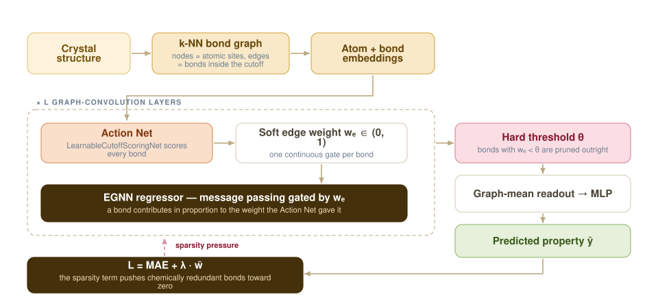

Teaching a GNN Which Bonds Are Worth Talking Over
In a crystal graph, every atom is normally wired to all its neighbours inside a fixed cutoff. That guarantees chemically irrelevant long-range contacts and it drives over-smoothing during message passing. CoGNN adds a learnable scoring network that decides, bond by bond, whether the message is worth sending at all.

Two problems with a fixed cutoff
Graph neural networks give benchmark accuracy for material property prediction, and the graph itself is the natural representation: atomic sites become nodes, bonds between neighbouring sites become edges. But connecting every node to everything inside a pre-defined cutoff radius does two unhelpful things at once. It manufactures long-range contacts that carry no chemistry, and it feeds over-smoothing — the failure where deep message passing drives every node embedding toward the same vector until the model can no longer tell atoms apart.
Earlier architectures work around the symptom rather than the cause. CGCNN shares one convolution weight matrix across all neighbours and therefore cannot distinguish how strongly different neighbours should interact. Geometry-dependent message-passing schemes improve on that, but the connectivity itself is still handed to them fixed.
Scoring the bonds instead of trusting the cutoff
CoGNN augments the ordinary graph convolution loop with an Action Net: a learnable edge-scoring network that assigns a soft weight we to every bond. That weight multiplies the edge during message passing, so an unimportant bond simply contributes less. A sparsity regulariser on the mean weight, added to the prediction loss as L = MAE + λw̄, applies steady downward pressure, and a hard threshold θ removes bonds that fall below it.
Four scoring variants were implemented and compared against the dense baseline, including a LearnableCutoffScoringNet (the default), an edge-only scorer and a multiplicative gate. The threshold θ was swept over {0.1, 0.2, 0.3, 0.4, 0.5} and selected on test MAE under a sparsity constraint, with five-fold cross-validation on both benchmarks.
What the model learned about chemistry
Band gap and formation energy want different graphs
For band gap, bonds in the 3–4 Å range turn out to be essential — the property depends on more than the local environment, and the scorer keeps those edges. For the highly localised formation energy the model retains only 62–68% of edges while matching or improving on the dense baseline. A substantial fraction of the structural edges in a crystal graph are simply chemically redundant for the property being predicted, and which fraction depends on the property.
The relationship is visible directly: plotting retained against dropped edges by bond distance shows the proportion of pruned edges rising with bond length for the learnable cutoff scorer. Where a variant fails to learn anything meaningful — the multiplicative gate on formation energy — the kept and dropped distributions superimpose, and its pruning is effectively random.
Over-smoothing, measured rather than asserted
Beyond accuracy, the pruned model maintains greater representational disparity across graph nodes than the dense baseline. Tracking MADGap along with NumRank and Erank of the final-layer node embeddings across depths L = 1…8 shows CoGNN holding node embeddings apart where the dense baseline collapses them — so the pruning is not merely cheaper, it mitigates the failure mode that limits deep materials GNNs.